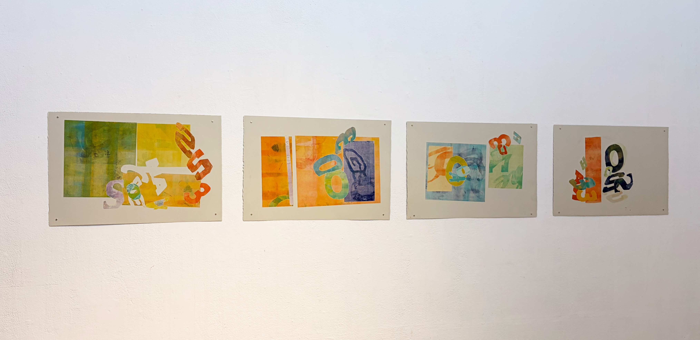
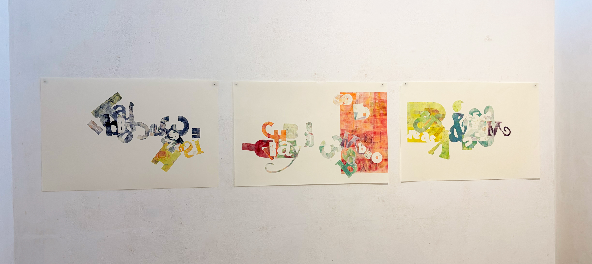

No Hook
2026
An installation of Monotype prints made with ink on paper. In this project I explored music-making, printmaking, and graphic design through found materials, sampling, and repetition. Inspired by the ways beats are built from snippets of existing sounds, the project translates methods of looping, remixing, and reuse into visual form through prints made from collected typography, imagery, and references pulled from music culture. The space is arranged in a continuous circular sequence, echoing the structure of a looping measure, while an interactive version of Chop&Screw invites viewers to experiment with beat-making themselves.



